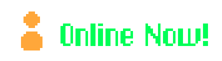
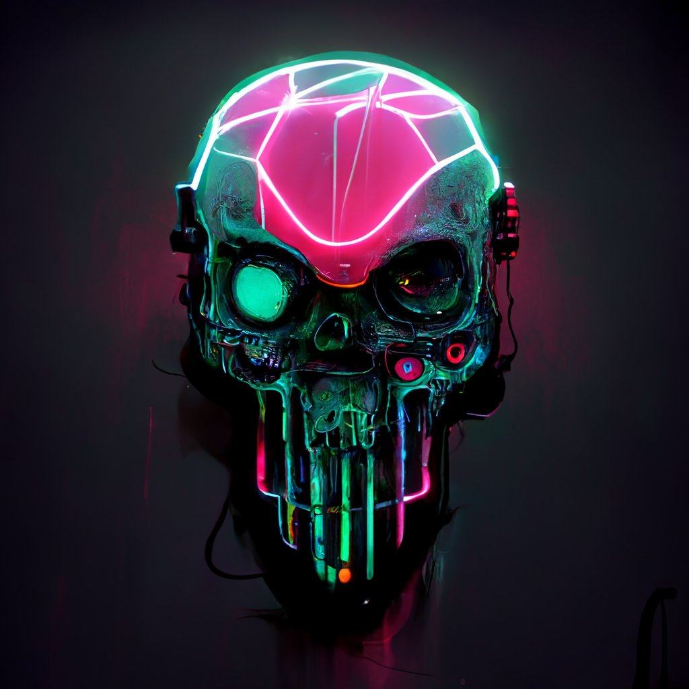

Reto 00
- Reto exclusivo Pack Invitación ACTIVADO
Flag
- Resuelve el reto y encuentra la flag.
Emblemas Escarlata
- Resuelve este reto y consigue 1 escarlata.

ESCARLATA
Cuatro almas tiene la escarlata...
Los usuari@s que han recibido esta invitación obtienen acceso exclusivo como público al primer programa de la temporada, pudiendo así participar en directo y hacer preguntas a los invitados. También se habilitan los emblemas escarlatas de los juegos y retos pertenecientes al programa, como elegid@ se otorgan un total de 2 escarlatas exclusivas del logro "primer colono".
Desbloque el emblema
- Consigue un emblema único por cada reto que resuelvas y colecciona benefícios para los rangos así como eventos exclusivos.
Estructura
- Consigue emblemas participando en cualquiera de las actividades del programa, incluso simplemente en el chat de twitch
Reto Privado
- Esta es la primera prueba para los primeros colonos en acceder a la Red Escarlata, la insignia escarlata recibida será especial.